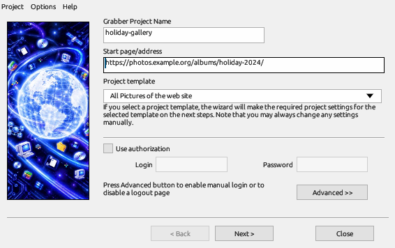

The Site Grabber starts at a web page, follows its links and downloads the files that match your filters: the pictures of a gallery, the PDF files of a site, or a whole site to read offline.

Click Grabber on the toolbar or choose Tasks → Run site grabber. The wizard has four steps; Next moves on, and a template fills in the later steps for you.
While the site is explored, the results window lists every page and file found. Sort the view by page, by site or by folder, or show pictures as thumbnails. Tick the files you want, then download them or add them to the main list.
Save a project to run it again later; saved projects appear under Grabber projects in the category tree. A project can also run at a set time, or at regular intervals to download only what is new on the site.
Options in the Grabber's menu sets how many pages are explored and how many files are downloaded at the same time (1 to 10 each), and whether link texts become file descriptions.
Keep the number of files at the same time low and respect the site's terms of use. Servers may refuse many requests at once.